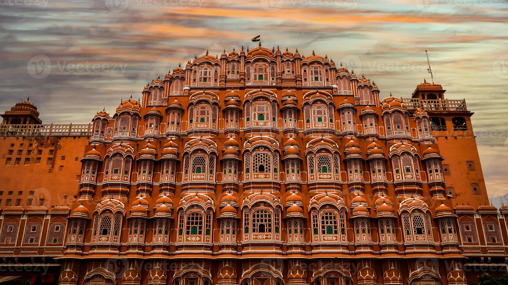

Day 1
Arrive in Jaipur and explore nearby sights if time allows.
Discover Rajasthan tour packages with Jaipur forts, Udaipur lakes, Jaisalmer desert landscapes and cultural experiences. Customize your Rajasthan holiday.

Rajasthan is ideal for travellers interested in forts, palaces, colourful markets, desert landscapes and regional cuisine. The route can be planned around heritage cities, travel time and the type of stay you prefer.
Tell us your preferred dates, number of travellers, departure city and budget range. We can help you compare suitable itinerary and accommodation options before you confirm your booking.
Request a customized quote →Use these ideas to build a trip that fits your interests and available time.
This is an illustrative outline, not a confirmed package. Final routing depends on your dates, availability and preferences.
Arrive in Jaipur and explore nearby sights if time allows.
Visit selected forts, palaces and local markets.
Travel to your next chosen city, such as Udaipur or Jodhpur.
Enjoy heritage sightseeing and local experiences.
Add a desert experience or return based on your chosen route.
Important details to check while planning your holiday.
A short trip can focus on one or two cities; a wider circuit needs more time for road or rail transfers.
Yes. The trip can focus on Jaipur or combine it with other destinations depending on your dates.
Accommodation options depend on availability, budget and travel dates. Ask for alternatives in your quote.
Share your travel dates, traveller count and preferences. We will help you explore suitable options.